1. Fundamentos Teóricos
¿Qué son?
Un Procedimiento Almacenado es un conjunto de instrucciones SQL que se guardan en el servidor de base de datos con un nombre. En lugar de escribir la consulta una y otra vez, simplemente "llamamos" al procedimiento para que se ejecute.
Ventajas Principales
- Rendimiento: Se compilan una vez y se ejecutan rápido.
- Seguridad: Evitan la inyección SQL y controlan accesos.
- Reutilización: Escribes el código una vez, lo usas muchas veces.
DELIMITER //
CREATE PROCEDURE nombre_procedimiento (IN parametro TIPO)
BEGIN
-- Instrucciones SQL (SELECT, INSERT, UPDATE...)
END //
DELIMITER ;
2. Base de Datos de Prueba
Para esta actividad, se creó una tabla llamada 'productos' simulando el inventario de una tienda de tecnología con 10 registros iniciales.
Estructura de la Tabla:
CREATE TABLE productos (
id_producto INT AUTO_INCREMENT PRIMARY KEY,
nombre VARCHAR(100),
categoria VARCHAR(50),
precio DECIMAL(10, 2),
stock INT
);Evidencia de Registros:
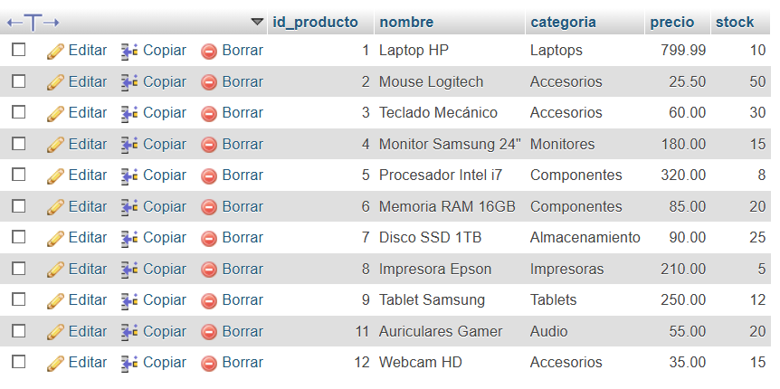
3. Creación y Ejecución de Procedimientos
A continuación, se documentan 10 procedimientos almacenados con diferentes utilidades (CRUD, Cálculos, Búsquedas).
Recibe datos y crea un nuevo registro.
CALL sp_insertar_producto('Webcam HD', 'Accesorios', 35.00, 15);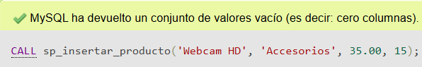
Muestra el inventario completo.
CALL sp_listar_todo();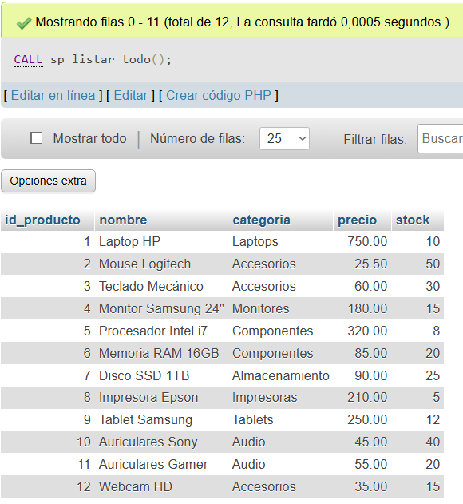
Modifica el precio de un producto por ID.
CALL sp_actualizar_precio(1, 799.99);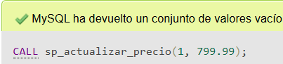
Borra un registro según su ID.
CALL sp_eliminar_producto(10);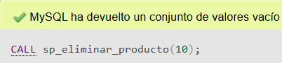
Filtra productos (Ej: 'Laptops').
CALL sp_buscar_categoria('Laptops');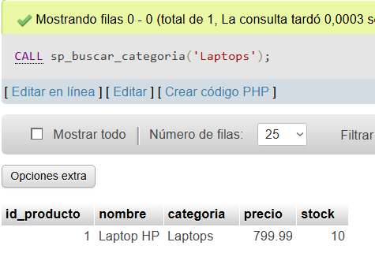
Devuelve la cantidad de ítems.
CALL sp_contar_productos();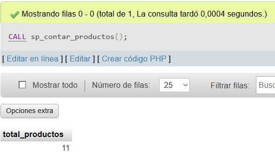
Muestra cuanto stock hay de un ID.
CALL sp_consultar_stock(2);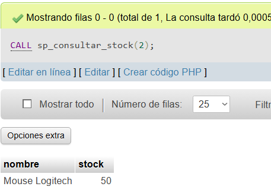
Alerta productos con < 10 unidades.
CALL sp_stock_bajo();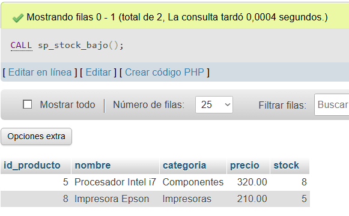
Suma total de dinero en mercadería.
CALL sp_valor_inventario();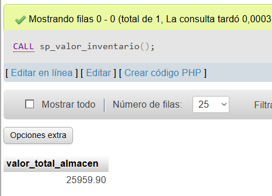
Busca por texto (Ej: productos 'Samsung').
CALL sp_buscar_nombre('Samsung');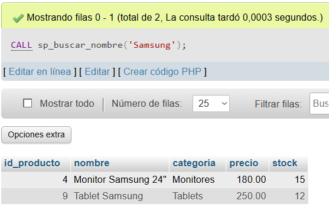
4. Script SQL Completo
Código fuente utilizado para generar la tabla y los 10 procedimientos.
-- SCRIPT DE LA ACTIVIDAD: PROCEDIMIENTOS ALMACENADOS
CREATE TABLE productos (
id_producto INT AUTO_INCREMENT PRIMARY KEY,
nombre VARCHAR(100), categoria VARCHAR(50),
precio DECIMAL(10, 2), stock INT
);
-- INSERT INTO productos (nombre, categoria, precio, stock) VALUES
('Laptop HP', 'Laptops', 750.00, 10),
('Mouse Logitech', 'Accesorios', 25.50, 50),
('Teclado Mecánico', 'Accesorios', 60.00, 30),
('Monitor Samsung 24"', 'Monitores', 180.00, 15),
('Procesador Intel i7', 'Componentes', 320.00, 8),
('Memoria RAM 16GB', 'Componentes', 85.00, 20),
('Disco SSD 1TB', 'Almacenamiento', 90.00, 25),
('Impresora Epson', 'Impresoras', 210.00, 5),
('Tablet Samsung', 'Tablets', 250.00, 12),
('Auriculares Sony', 'Audio', 45.00, 40);
DELIMITER //
CREATE PROCEDURE sp_insertar_producto(IN p_nombre VARCHAR(100), IN p_cat VARCHAR(50), IN p_precio DECIMAL(10,2), IN p_stock INT)
BEGIN
INSERT INTO productos (nombre, categoria, precio, stock) VALUES (p_nombre, p_cat, p_precio, p_stock);
END //
CREATE PROCEDURE sp_listar_todo()
BEGIN
SELECT * FROM productos;
END //
CREATE PROCEDURE sp_actualizar_precio(IN p_id INT, IN p_nuevo_precio DECIMAL(10,2))
BEGIN
UPDATE productos SET precio = p_nuevo_precio WHERE id_producto = p_id;
END //
CREATE PROCEDURE sp_eliminar_producto(IN p_id INT)
BEGIN
DELETE FROM productos WHERE id_producto = p_id;
END //
CREATE PROCEDURE sp_buscar_categoria(IN p_categoria VARCHAR(50))
BEGIN
SELECT * FROM productos WHERE categoria = p_categoria;
END //
CREATE PROCEDURE sp_contar_productos()
BEGIN
SELECT COUNT(*) AS total_productos FROM productos;
END //
CREATE PROCEDURE sp_consultar_stock(IN p_id INT)
BEGIN
SELECT nombre, stock FROM productos WHERE id_producto = p_id;
END //
CREATE PROCEDURE sp_stock_bajo()
BEGIN
SELECT * FROM productos WHERE stock < 10;
END //
CREATE PROCEDURE sp_valor_inventario()
BEGIN
SELECT SUM(precio * stock) AS valor_total_almacen FROM productos;
END //
CREATE PROCEDURE sp_buscar_nombre(IN p_texto VARCHAR(50))
BEGIN
SELECT * FROM productos WHERE nombre LIKE CONCAT('%', p_texto, '%');
END //
DELIMITER ;